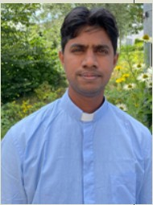
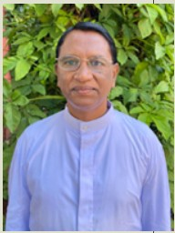
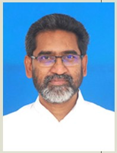

Rector
Rev Fr. Medanki Anand Andrew,
M.E.Th, M.I.D., S.T.L.,S.T.D. M.Tech, M.B.A., Ph.D.
Diocese of Eluru
Sacred Liturgy, Prefect of Sports & Games, Prefect of S.T.P., Animator of Sacred Liturgy, Animator of Social Academy, Liturgical Music, English
Bursar
Fr. K. Thomas Christopher, M.A.
Diocese of Srikakulam
Prefect of Health, Prefect of Environment, Animator of St. Vincent de Paul
Rev. Fr. Dasi Suresh Kumar, M.Th., S.T.D.
Diocese of Vijayawada
Sacred Scripture, Prefect of Studies, Prefect of Cultural Activities
Rev. Fr. Golamari Bala Martin, S.T.L., S.T.D.,
Diocese of Warangal
Systematic Theology, Animator of Environment Animator of Legion of Mary, Animator of Cultural Activities, English Academy
Rev. Fr. Kurma Thomas, M.A., LL.B., J.C.D.,
Diocese of Vijayawada
Canon Law, Prefect of Computers

Rev Fr. Yeruva Satish Kumar, S.T.L.
Diocese of Warangal
Church History, Prefect of Discipline, Animator of Youth Ministry

Rev. Fr. Dodda Raja, S.T.L., S.T.D.
Diocese of Warangal
Spiritual Theology, Spiritual Director, Telugu Academy

Rev. Fr. Valle Vijaya Joji Babu, M.A., S.T.L., S.T.D.
Diocese of Vijayawada
Systematic Theology, Prefect of Library
Rev. Fr. Thippabathuni Kamalesh Kumar, M.A., B.Ed., S.T.L.
Diocese of Guntur
Sacred Scripture, Animator of Cultural Activities
Rev. Fr. Kanaparthi Prakash, M.Th.
Diocese of Khammam
Confessor, Editor of Nene Velugu, St. John’s Publications, Telugu Academy, Liturgical Music, Telugu
Visiting Professors
| Father Name | Subject |
|---|---|
| Fr. Thomas Stephen, M.Th., Ph.D. | Dogmatic Theology |
| Fr. K. Anthaiah, M.Th., S.T.D. | Systematic Theology |
| Fr. S. Aloysius, M.Sc., L.S.S. | Sacred Scripture |
| Most Rev. Udumala Bala, D.Th. | Moral Theology |
| Rev. Fr. S. Bernard, D.C.L. | Canon Law |
| Fr. Alex Jayaraj, S.D.B. | Catechetics |
| Fr. L. Jude J. Mendonca, C.Ss.R. | Homiletics |
| Fr. K. Sleeva, C.Ss.R. | Homiletics |
| Fr. K. Jossy, O.C.D. | Patrology |
| Most Rev. T. Joseph Raja Rao | Child Protection & Emotional Management |
| Sr. Shanthi Agatha D’Mello | Psycho-spiritual Development |
| Fr. David Francis, B.Sc., B.Th. | Parish Administration |
| Fr. Lourduraj Ignacimuthu, S.J. | Communications & Mass Media |
| Fr. A.E. Alex, B.A., LL.B. | Civil Law |
| Mr. Chennubotlu, C.A. | Accountancy |
| Mr. K. Ranganath, M.A. (Tel) | Telugu |